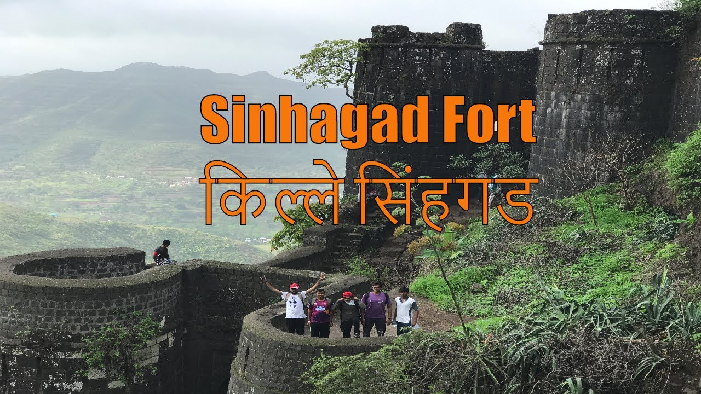
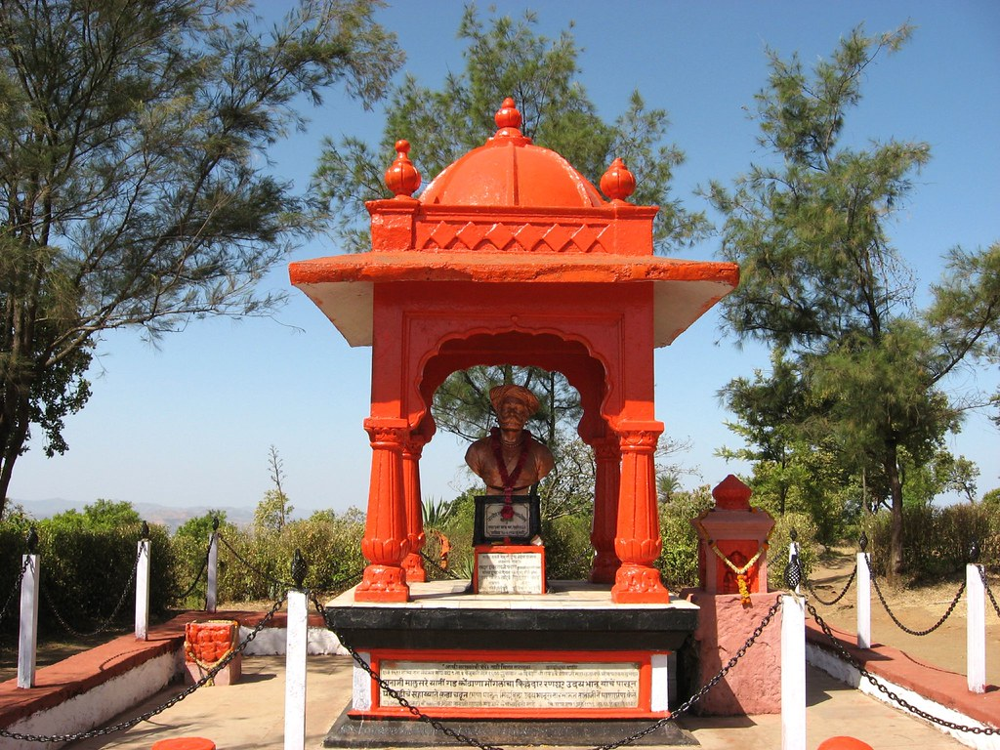

Breathtaking Views of Sinhagad
Multiple perspectives showcasing the fort's majestic beauty and historical significance
The Lion's Fort - Symbol of Maratha Valor
Multiple perspectives showcasing the fort's majestic beauty and historical significance
~30 km southwest of Pune city
1,312 meters above sea level
Previously known as Kondhana
Moderate - Popular trekking destination
Sinhagad, meaning "The Lion's Fort," is an ancient hill fortress that has been the site of many battles throughout history. Most notably, it witnessed the historic Battle of Sinhagad in 1670, where Tanaji Malusare sacrificed his life while recapturing the fort for the Maratha Empire.
Previously known as Kondhana, the fort stands as a testament to the valor and strategic brilliance of the Maratha warriors. Its location on an isolated cliff of the Bhuleswar range in the Sahyadri Mountains made it an impregnable stronghold.
Tomb of the brave Maratha warrior who sacrificed his life for the fort
Breathtaking views of Pune city and surrounding landscapes
Several historic water tanks that stored water for the fort's inhabitants
Ancient buildings, temples, and fortifications showcasing Maratha architecture
Base to fort: 2.7 km (one way)
1-2 hours one way trek
Approximately 600 meters (1,950 feet)
Road directly leads to summit; shared taxis available
Perched on an isolated cliff of the Bhuleswar range in the Sahyadri Mountains, Sinhagad stands at approximately 760 meters above ground level and 1,317 meters above mean sea level. The fort's strategic location provided excellent vantage points for monitoring the surrounding regions and controlling important trade routes.
The fort's natural defenses, combined with its man-made fortifications, made it nearly impossible to capture through direct assault. This strategic advantage made it a crucial asset in the Maratha Empire's network of forts in the Sahyadri region.